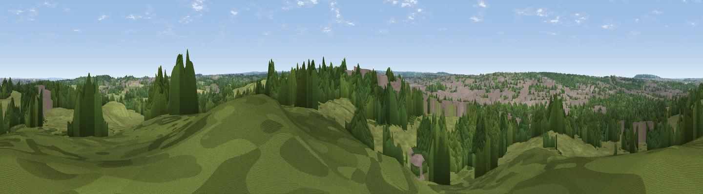

Pilgrim Hill
#43670 in England · top 70% of its area beats it · near Ruxley · access?Where it is
The exact computed spot (TQ 47882 69217). Click the marker for map links.
Public access: no public right of way or access land is recorded at this exact spot — it may be on private land. Computed from Natural England's CRoW access layer and OpenStreetMap rights of way — not the legal definitive map. Always verify locally.
The view, rendered

A 360° render of this exact spot computed from the terrain model, tree cover and land cover — summer colours, afternoon light, calibrated against photographs of famous viewpoints. Real trees, hedges and buildings will differ in detail.
The panorama
Grey silhouette: terrain skyline in each direction (720 bearings, Earth curvature and refraction included). Dashed green: skyline with trees (+15 m) and buildings (+8 m) as obstacles. Blue strip: how far the ground is visible on each bearing.
Where the view opens
Wedge length = distance to the farthest visible ground on that bearing (vegetation-aware). Rings at 10, 25 and 50 km.
What fills the view
39% grassland · 34% woodland · 23% built-up · 3% cropland ·
Angular shares of the visible panorama (visual magnitude), not map area. Landscape diversity 0.53 (0–1 Shannon).
Key numbers
More beautiful places nearby
The staircase of upgrades: each row has a higher view potential than everything closer. Driving times are estimates from straight-line distance, calibrated against real road routing — check an actual route before setting out.
| Place | Direction | Drive | Score |
|---|---|---|---|
| Viewpoint near Upper Ruxley | NE · 2 km | ~6 min | 19.2 |
| Viewpoint near Hextable | ENE · 5 km | ~10 min | 28.3 |
| Viewpoint near Hextable | ENE · 5 km | ~10 min | 37.6 |
| Viewpoint near Farningham | ESE · 9 km | ~17 min | 39.1 |
| Viewpoint near Shoreham | SSE · 10 km | ~19 min | 40.2 |
| Viewpoint near Ebbsfleet Valley | ENE · 13 km | ~23 min | 41.1 |
| Viewpoint near Brasted | S · 13 km | ~23 min | 42.6 |
| Viewpoint near Westerham | SSW · 14 km | ~25 min | 43.5 |
51.40271, 0.12461 · source: osm peak · position refined by local search. Computed location — check access rights before visiting.